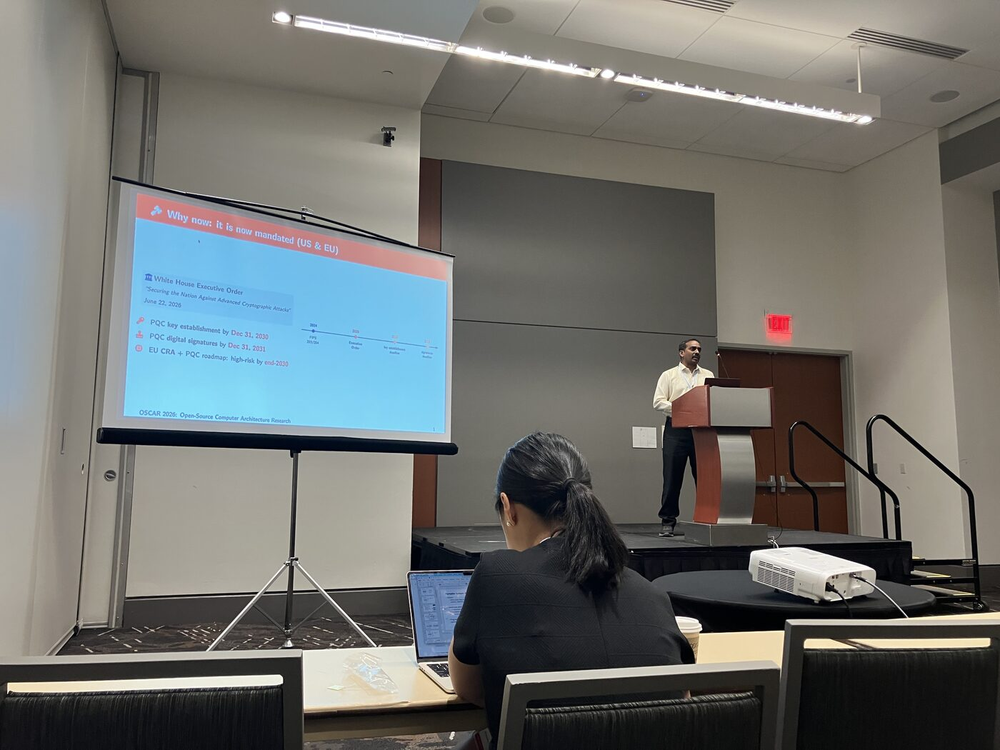
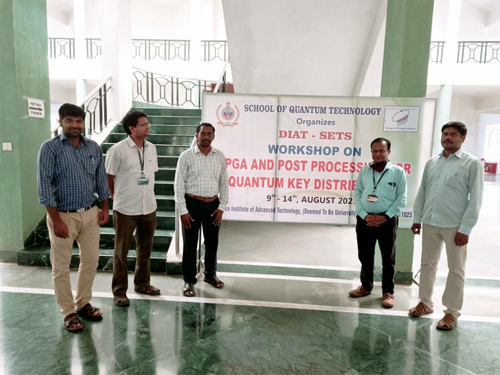

Dillibabu Shanmugam
about
research
publications
talks
awards
service
experience
education
tools
Talks
2026
Open-Source Reference for Reproducible Side-Channel Assessment of Post-Quantum Standards
D. Shanmugam
, P. Schaumont
OSCAR Workshop 2026 (co-located with ISCA 2026)
PDF
Slides
Talk · Journal in prep
2021
Key Distillation Engine for Quantum Key Distribution (KDE-QKD)
D. Shanmugam
Defence Institute, Pune, India · June 2021
5-day Workshop
2010
Efficient Packet Capturing for DDoS on FPGA
D. Shanmugam
Queensland University of Technology (QUT), Brisbane, Australia · Indo–Australia Joint Project on DDoS Detection & Mitigation (HW realization)
Research Visit

Presenting at the
OSCAR Workshop, ISCA 2026
· Open-Source Reference for Reproducible Side-Channel Assessment of Post-Quantum Standards.
View photo

DIAT-SETS Workshop on FPGA & Post-Processing for Quantum Key Distribution
· Key Distillation Engine (KDE-QKD), Pune, 2021.
View photo